Accessible books in browsers
This project converts EPUBs into web books. Narration stays in sync with the highlighted text, and the result is a folder of HTML files you can host on a website.
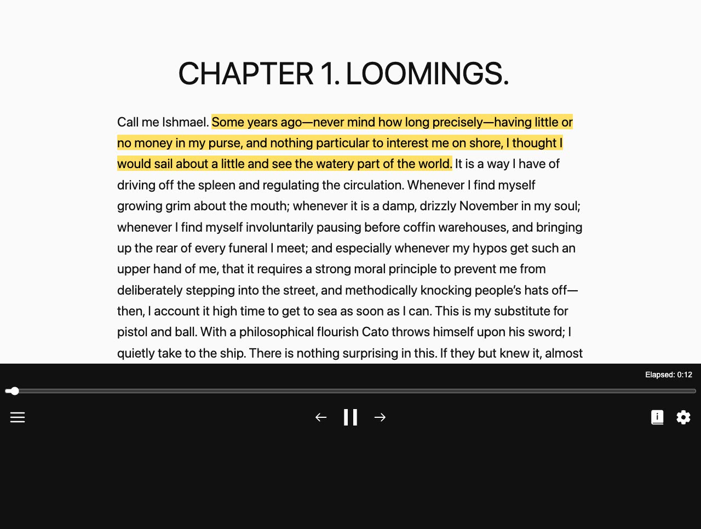
Read Moby-Dick
Reading features
The videos below show a few seconds of each feature. The README has the full list , and the keyboard shortcuts .
Synchronized playback
Narration plays and each phrase is highlighted as it's read, and the page keeps the phrase positioned in view.
Watch the clip (with sound)
Caption mode
Caption mode shows only the phrase being read, large and in the middle of the screen.
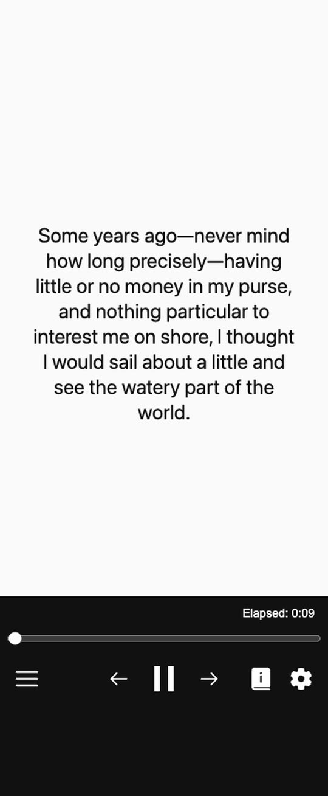
Watch the clip (with sound)
Table of contents
The table of contents opens at the current section, with a key that goes to the Show levels menu, and Find a section. It all works by keyboard. The captions show each key.
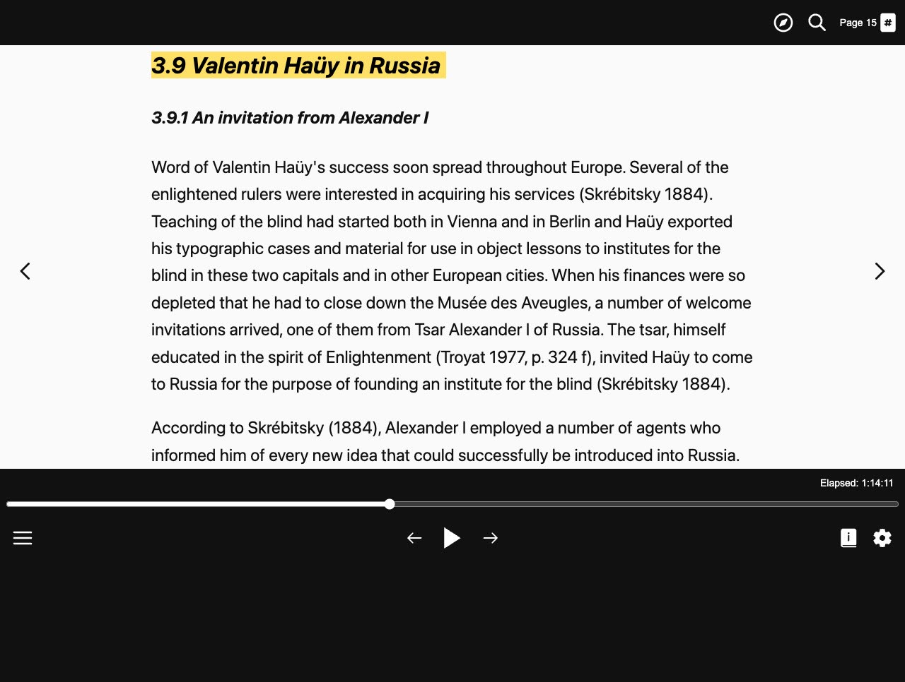
Watch the clip
Search
Search finds a word anywhere in the book, in any language.
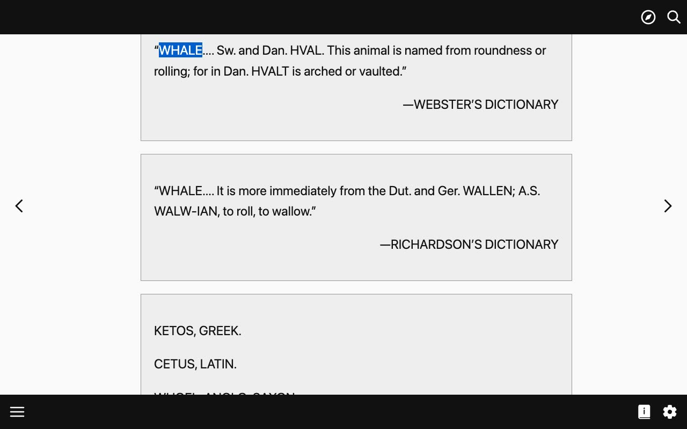
Watch the clip
Where am I?
Where am I? says what you're in and which heading it's under.
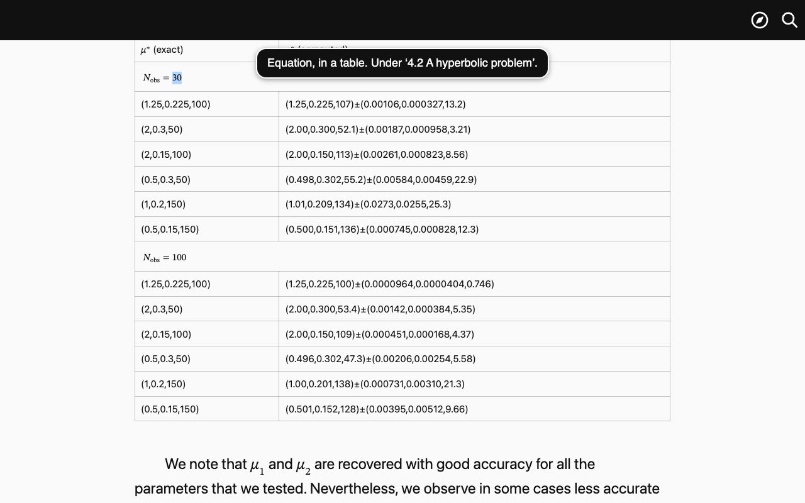
Watch the clip
Notes
When narration reaches a phrase with a note, the Note button shows the note, and Back to text returns to the same spot.
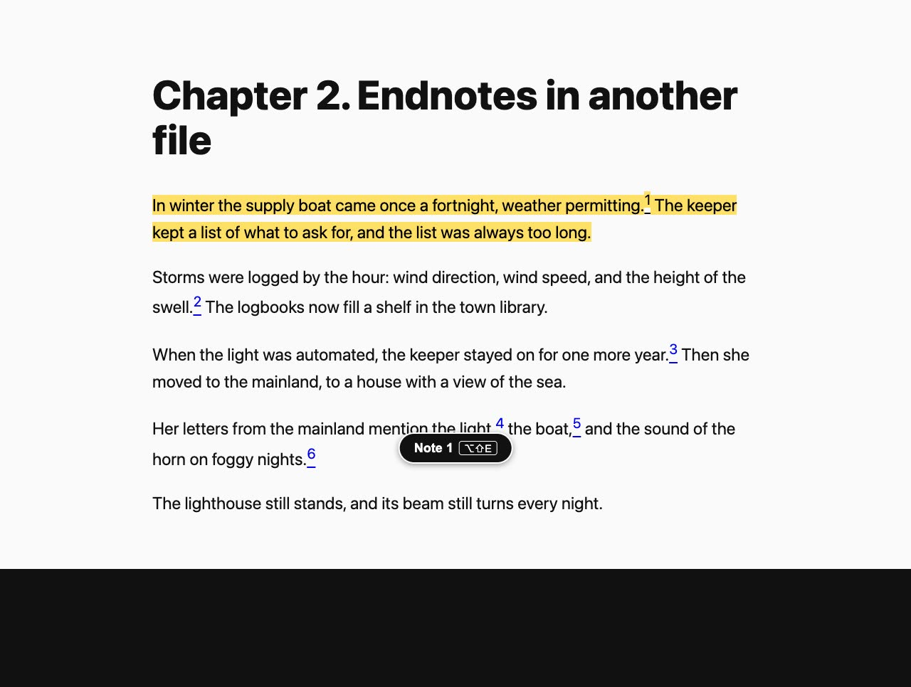
Watch the clip
Leave a structure
During narration, one key leaves the table, list or note being read.
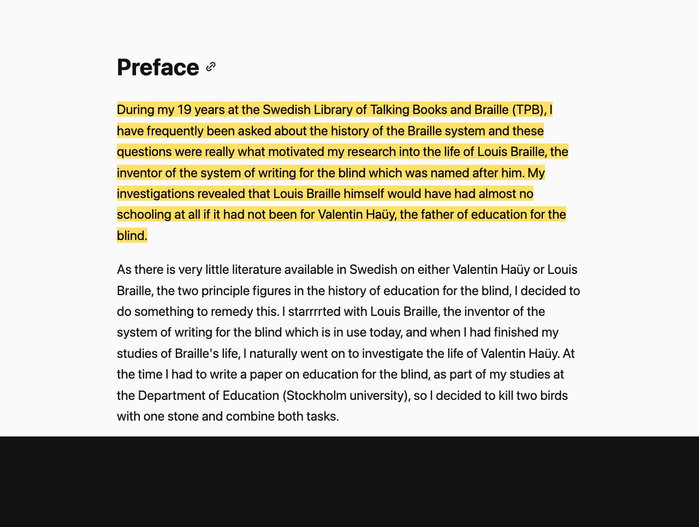
Watch the clip (with sound)
Structure sounds
An option to enable structural sounds, like rising notes before a heading and knocks entering a table.
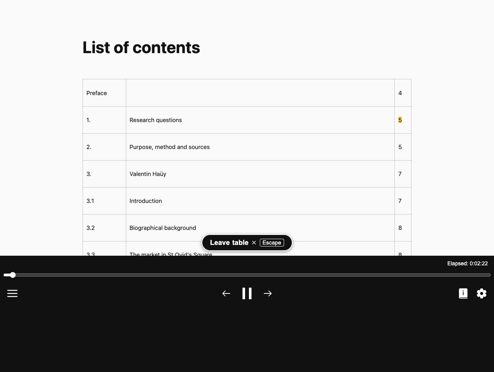
Watch the clip (with sound)
Colors and text
Colors and text are customizable, and the color pairs are checked for contrast.
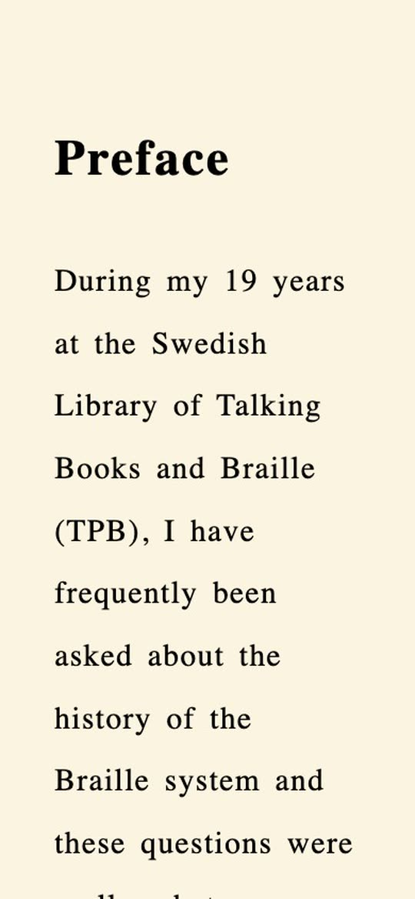
Watch the clip
As published
As published shows the book in the publisher's own design, and My settings shows it in yours.
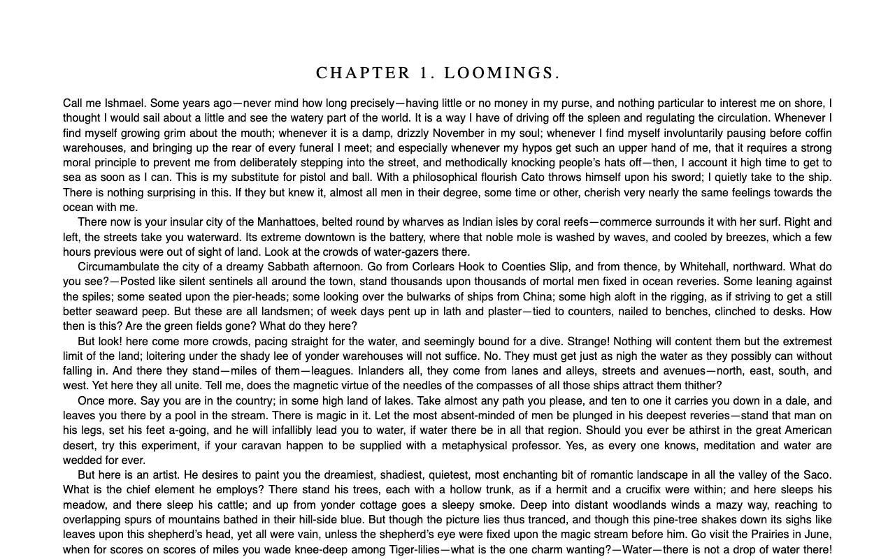
Watch the clip
Vertical writing
Books in vertical writing stay vertical, and the Writing direction setting can switch them to horizontal.
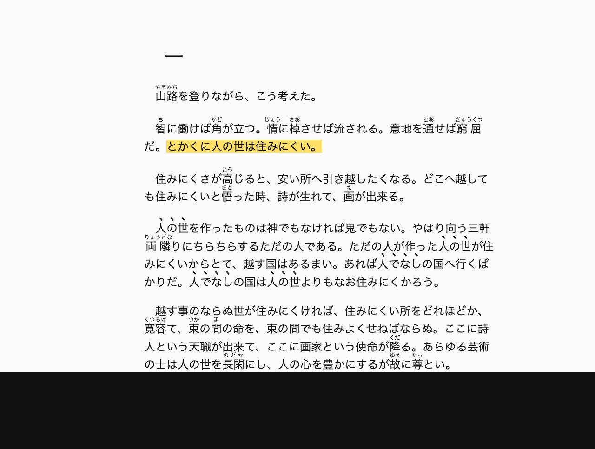
Watch the clip (with sound)
Offline
Save a book for offline reading, then read it with no connection, narration included.
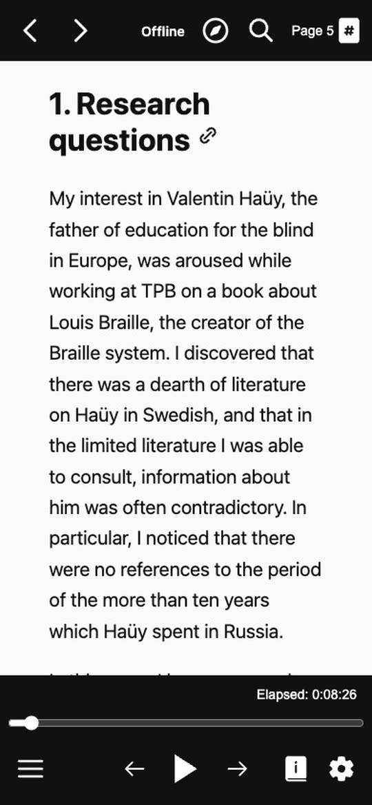
Watch the clip
Reading demos
Real books converted with this project. See About the demos for details.
Convert a book
Use the converter in your browser on a computer, with nothing to install. Conversion features shows each step. Or run it from the command line, as the README explains .